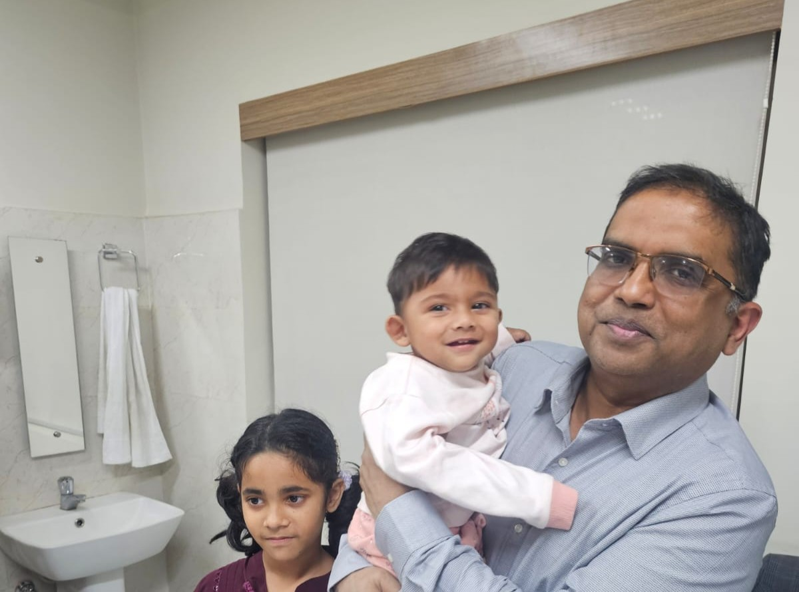
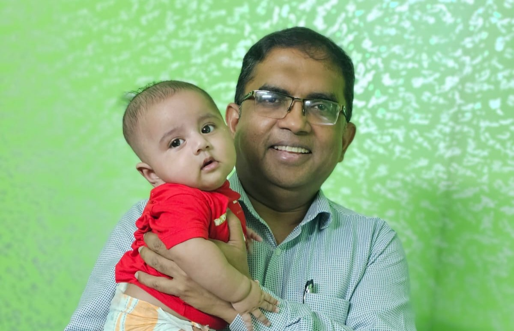
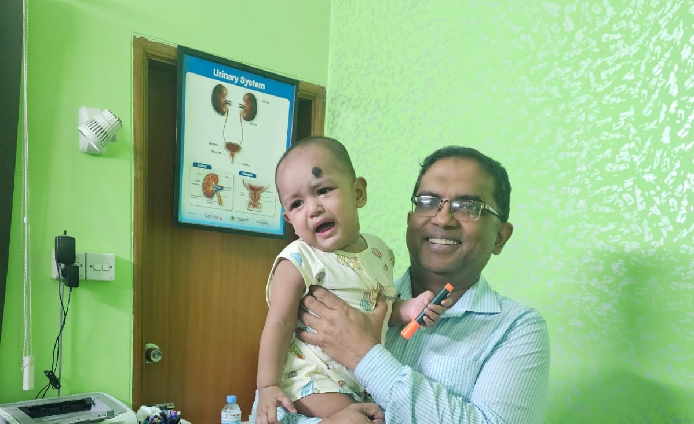
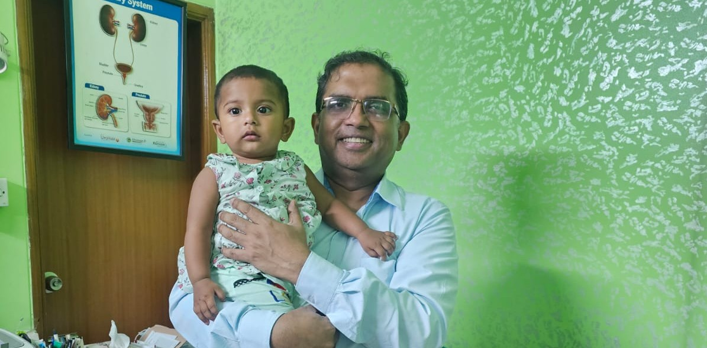
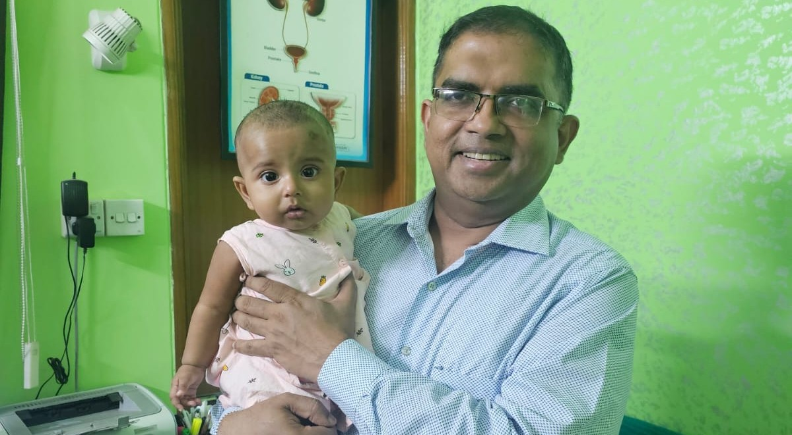
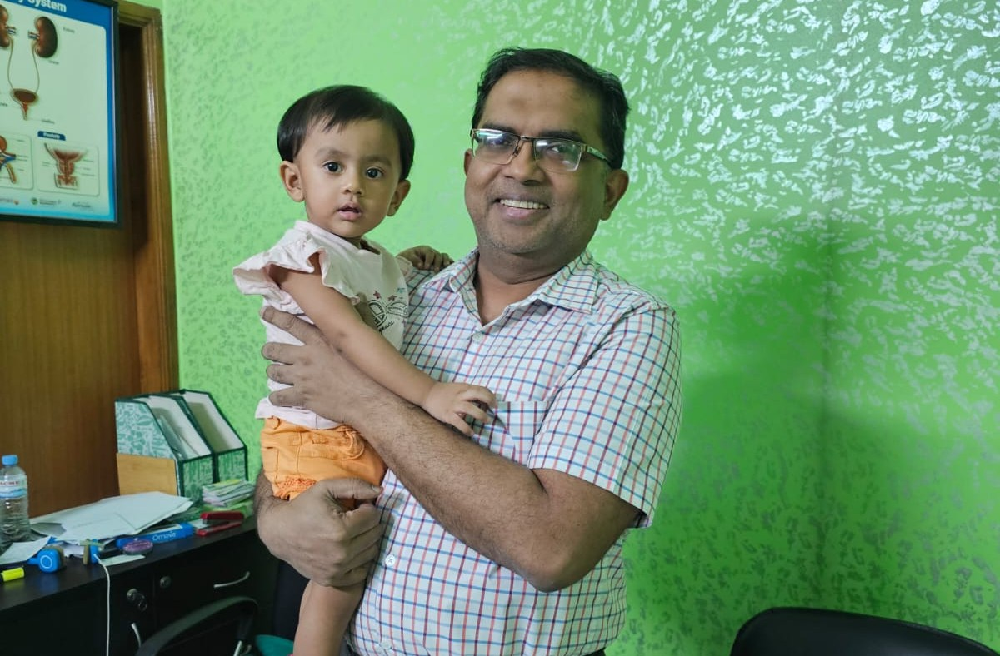
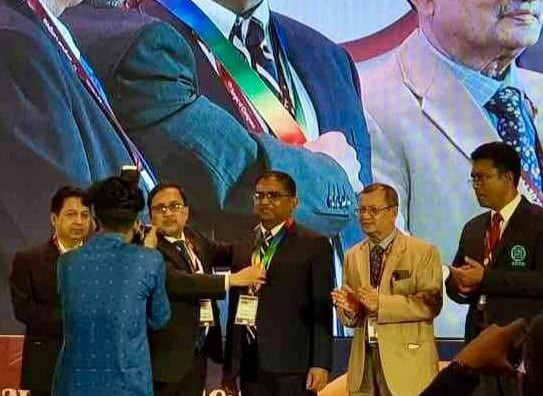
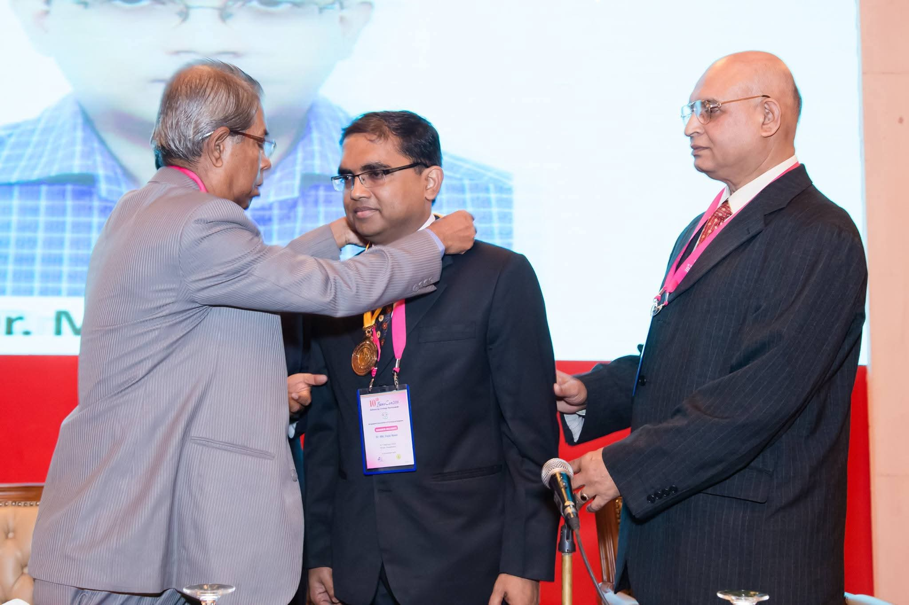

Prof. Md. Fazal Naser
Urologist
MBBS (DMC), FCPS (Surgery), MS (Urology)
FRCS (Glasgow), MRCS (Edin), FACS (USA)
One of the most prominent Bangladeshi Urologists. Advanced Laparoscopy, Endourological Surgeon & Andrologist. His core value is to provide the best tech-savvy Urology Care with minimal cost.
Prof. Md. Fazal Naser qualified from Dhaka Medical College, The Royal College of Surgeons of Edinburgh, Bangladesh Medical University (BMU), and The Bangladesh College of Physicians & Surgeons.
Besides his national and international degrees in General Surgery and Urology, he has worked at world-famous Urology Centers globally, including the highly prestigious Mulji Bhai Patel Urological Hospital in India.
Years Experience
Surgeries
National Institute of Kidney Diseases & Urology (NIKDU)
21 Feb 2021 - Present
Shaheed Suhrawardy Medical College
2017 - 2021
Shaheed Suhrawardy Medical College
2011 - 2017
India
2013
National Health Services (NHS), UK
2012 - 2013
Various Institutions
2008 - 2011
Mitford Hospital
2007
Bangladesh Medical University (BMU)
2003 - 2006
Contributing to the global advancement of urological science.
Journal Articles
International Conferences
Books Published
Providing high-end, minimally invasive urological solutions.
Dedicated care for congenital conditions in children, including hypospadias, epispadias, and posterior urethral valves.






Pioneered and established successful retroperitoneoscopic urological surgery in Bangladesh, offering high-tech care at decent costs.
Comprehensive, precise surgical management of cancers of the kidney, bladder, and prostate using modern techniques.
Minimally invasive approaches for stone management and complex reconstructive procedures, ensuring faster recovery.
Comprehensive solutions for kidney and urethral stones using advanced laser technology such as PCNL, RIRS, and flexible URS.
Expertise in complex surgical procedures, including urethroplasty, partial/radical nephrectomy, and management of congenital anomalies like PUJ obstruction.
Specialized assessment and treatment for voiding dysfunction and stress urinary incontinence, utilizing urodynamic studies and modern slings.
Specialized diagnosis and treatment of male reproductive health issues, providing compassionate and confidential care.
Expert care for female urinary tract issues, including incontinence, pelvic organ prolapse, and recurrent infections.
Extensive experience and WHO Fellowship training in complex renal transplant procedures and comprehensive aftercare.
Integrated care for kidney patients, including dialysis support, biopsy, and AV fistula creation.

2023
The highest award in surgery in Bangladesh, awarded for outstanding contributions and the development of Laparoscopic Urology in the country.

2016
Awarded by the Bangladesh Association of Urological Surgeon (BAUS) in recognition of outstanding achievements in urology.
International Impact
Invited to deliver prestigious urological lectures and share expertise in countries like the UK, India, USA, Canada, and Singapore.
Real experiences from the people we care for.
Verified feedback, patient experiences, and success stories will be published shortly.